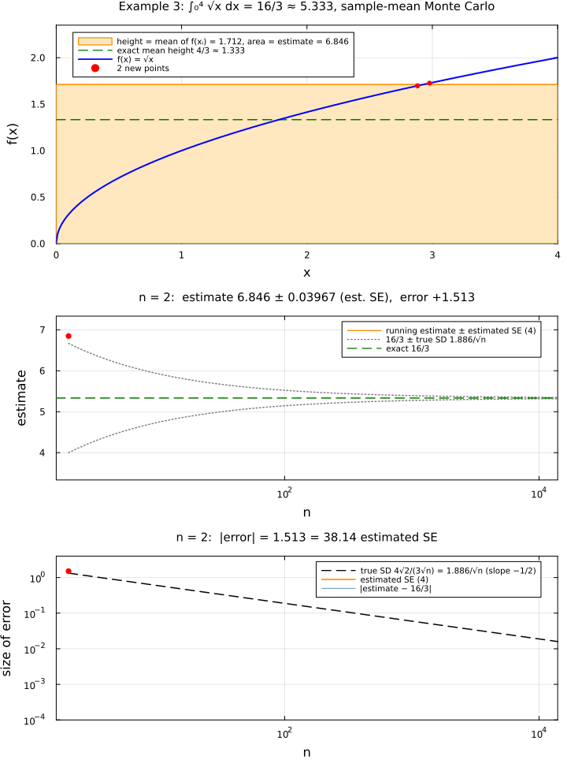
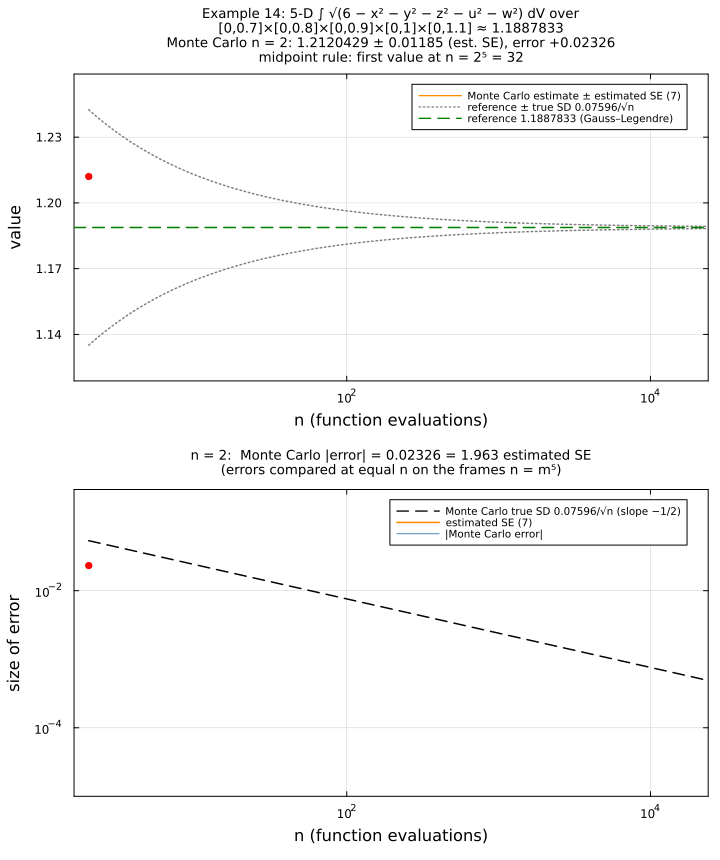

Monte Carlo Integration
Source inspiration: (Mathew 2000-2019).
Description
Monte Carlo integration approximates a definite integral \(I=\int_a^b f(x)\,dx\), or an integral over a box in \(d\) dimensions, by random sampling instead of a fixed grid. The sample-mean estimator draws \(n\) independent points \(x_1,\dots,x_n\) uniformly from \([a,b]\), averages the function values and multiplies by the length of the interval (the volume of the box in \(d\) dimensions): \[ \hat I_n=(b-a)\,\hat f,\qquad \hat f=\frac1n\sum_{i=1}^n f(x_i),\qquad \text{error}\approx (b-a)\sqrt{\frac{\widehat{f^2}-\hat f^{\,2}}{n}},\quad \widehat{f^2}=\frac1n\sum_{i=1}^n f(x_i)^2 . \] The estimate is the base times the “average height” of \(f\), which is the mean value theorem for integrals with the exact average replaced by a sample average.
The error is random. Its standard deviation, the standard error, is \((b-a)\,\sigma_f/\sqrt n\), where \(\sigma_f\) is the standard deviation of \(f\) over the interval, so the error falls like \(O(1/\sqrt n)\): a hundred times as many points buys one more correct digit. That rate does not depend on the dimension, whereas a product midpoint rule with \(n\) points in \(d\) dimensions has error \(O(n^{-2/d})\) for smooth integrands; for \(d>4\) the Monte Carlo rate is the faster one. Mathews’ module uses only the sample-mean estimator; the hit-or-miss variant, which counts the random points that land under the graph, is on the Monte Carlo Pi page. Every run gives a different estimate, so each single-run estimate on this page is one sample run, made with NumPy’s default_rng generator (PCG64) and the seed stated, and is quoted with its estimated standard error; the repeat studies give their seeds too, and Mathews’ own runs are quoted as his runs. A point in \(d\) dimensions takes \(d\) consecutive numbers from the stream (random((n, d))), one for each coordinate in the order \(x, y, z, u, w\), which is the order of the intervals in the box (outermost integral sign first), each scaled to that coordinate’s interval.
Animations
Both animations are new. Mathews’ Monte Carlo Integration module has no animation of its own: its Animations link opens his Midpoint Rule animation. Each animation follows one seeded run of the sample-mean estimator, made in Julia with the standard library’s Xoshiro generator and the seed stated. These are not the NumPy runs quoted in the examples below, so the numbers differ; every number in a frame is the Julia run’s own. Each frame adds points, stepping through \(n=2,\dots,10\) and then ten sample sizes per decade (Case 2 adds the frames \(n=m^5\)), and the last frame is held. One panel shows the running estimate with a band of \(\pm\) one estimated standard error (formula (4), or (7) in five dimensions) and the exact or reference value. Once \(n\) is large the band is too narrow to see there, so a second panel plots, on log-log axes, the size of the actual error, the estimated standard error and the true standard deviation, which falls with slope \(-\tfrac12\). The size of the error dips sharply wherever the error changes sign; the deepest dips leave the bottom of that panel.
Case 1 animates Example 3 and Case 2 animates Example 14. Not animated: the mean value theorem of Example 1, the one-dimensional midpoint rule of Example 2 (Case 2 shows the midpoint rule only in five dimensions), Examples 4 and 5, the double integrals of Examples 6 and 7, Examples 8–13 (Example 13 is the integral of Example 14), and the repeat studies.
Julia source scripts that generated these animations are linked under each case.
Case 1 — Example 3, \(\int_0^4\sqrt x\,dx=\tfrac{16}{3}\), \(n=2\) to \(10\,000\) (seed 3)
Behavior: The top panel puts each sampled point on the graph of \(\sqrt x\), newest points in red, under the rectangle of base 4 whose height is the mean of the sampled values \(f(x_i)\); its area is the estimate, and its height settles toward the exact average height \(\tfrac43\). In this run the estimate is \(6.846\) at \(n=2\), \(5.692\) at \(n=10\), \(5.444\pm0.05756\) at \(n=1000\) (error \(+0.1111\), 1.93 estimated standard errors) and \(5.343\pm0.01895\) at \(n=10\,000\) (error \(+0.009405\), 0.50 estimated standard errors). At \(n=2\) the two points happen to lie close together, so formula (4) gives an estimated error of only \(0.03967\) against a true standard deviation of \(1.333\), and the actual error, \(+1.513\), is 38 estimated standard errors: with very few points the error estimate is unreliable. From \(n=100\) on, the estimated standard error stays within 5.3% of the true value \(1.886/\sqrt n\), so in the bottom panel it runs along the dashed line of slope \(-\tfrac12\), and from \(n=10\) on the actual error is never more than 2.24 estimated standard errors (the largest is 2.23, at \(n=726\)).

Case 2 — Example 14, Monte Carlo against the midpoint rule in five dimensions, \(n=2\) to \(16\,807\) (seed 14)
Behavior: The product midpoint rule with \(m=2,\dots,7\) midpoints per axis uses \(n=m^5=32,\ 243,\ 1024,\ 3125,\ 7776,\ 16\,807\) points; each midpoint value (purple) appears when the Monte Carlo run reaches the same \(n\). All six are above the reference value \(1.1887833\), from \(1.2006958\) at \(m=2\) down to \(1.1897660\) at \(m=7\), and on the log-log axes their errors fall less steeply than the Monte Carlo standard deviation \(0.07596/\sqrt n\). That standard deviation is larger than the midpoint error at \(n=32\) (\(0.01343\) against \(0.01191\)) and smaller at \(m=3,\dots,7\), where the midpoint error is \(1.09\) times it at \(n=243\), growing to \(1.68\) times at \(n=16\,807\). In this run the Monte Carlo error is smaller than the midpoint error at \(n=32\), \(243\), \(1024\), \(3125\) and \(7776\), but not at \(n=16\,807\), where the estimate \(1.1877085\pm0.0005841\) has error \(-0.001075\) (1.84 estimated standard errors) against the midpoint error \(+0.0009827\). The repeat study in Example 14 found the midpoint rule ahead in 9.1% of runs at \(n=16\,807\), and this run falls in that minority, in keeping with Mathews’ remark that Monte Carlo has the smaller error most of the time, not always.

Background: The Average Value of a Function
If \(f\) is continuous on \([a,b]\), there is a number \(c\) with \(a<c<b\) such that \[ \frac{1}{b-a}\int_a^b f(x)\,dx=f(c), \qquad\text{equivalently}\qquad \int_a^b f(x)\,dx=(b-a)\,f(c). \tag{1} \]
The area under the curve equals the area of a rectangle with base \(b-a\) and height \(f(c)\), the average height of \(f\). Monte Carlo integration estimates that average height from random samples.
Example 1 — Average height of \(f(x)=\sin x+\tfrac13\sin 3x\) on \([0,\pi]\)
Find \(c\) so that \(\int_0^\pi f(x)\,dx=(\pi-0)\,f(c)\).
Step 1: Integrate. An antiderivative is \(-\cos x-\tfrac19\cos 3x\), so \[ \int_0^\pi\left(\sin x+\tfrac13\sin 3x\right)dx=\left(1+\tfrac19\right)-\left(-1-\tfrac19\right)=\frac{20}{9}\approx 2.222222. \]
Step 2: The average height is \[ f(c)=\frac{1}{\pi}\cdot\frac{20}{9}=\frac{20}{9\pi}\approx 0.707355. \]
Step 3: Solve \(\sin c+\tfrac13\sin 3c=\dfrac{20}{9\pi}\) on \((0,\pi)\). Since \(f'(x)=\cos x+\cos 3x=2\cos x\cos 2x\), the graph of \(f\) has two humps of height \(f(\pi/4)=f(3\pi/4)=2\sqrt2/3\approx0.9428\) with a dip to \(f(\pi/2)=2/3\) between them, so the horizontal line at height \(0.707355\) crosses it four times: \[ c\approx 0.405695,\qquad c\approx 1.364322,\qquad c\approx 1.777271,\qquad c\approx 2.735898 . \] Because \(f(\pi-x)=f(x)\), the roots come in pairs \(c\) and \(\pi-c\). Mathews’ solution reports one of them, \(c=1.36432\).
Verification: each root satisfies \(f(c)-20/(9\pi)=0\) to the 30-digit working precision of the root finder, and \(\pi\,f(c)=\pi\cdot\dfrac{20}{9\pi}=\dfrac{20}{9}\). \(\checkmark\)
The Composite Midpoint Rule
The deterministic method to compare against samples \(f\) at the centres of equal subintervals instead of at random points.
Divide \([a,b]\) into \(n\) subintervals of width \(h=(b-a)/n\) with midpoints \(x_i=a+\left(i-\tfrac12\right)h\), \(i=1,\dots,n\). Then \[ M(f,h)=h\sum_{i=1}^n f(x_i)=(b-a)\,\hat f,\qquad \hat f=\frac1n\sum_{i=1}^n f(x_i). \tag{2} \] If \(f''\) is continuous on \([a,b]\), there is a \(\xi\in(a,b)\) with \[ \int_a^b f(x)\,dx-M(f,h)=\frac{(b-a)\,f''(\xi)}{24}\,h^2=O(h^2). \]
The midpoint rule and the Monte Carlo estimate have the same form, \((b-a)\) times an average of function values; they differ only in where the points are placed.
Example 2 — Midpoint rule for \(\int_0^4\sqrt x\,dx\)
The exact value is \(\int_0^4\sqrt x\,dx=\tfrac23\,4^{3/2}=\tfrac{16}{3}\approx5.333333\).
Step 1: With \(n=10\), \(h=0.4\) and the midpoints are \(0.2,0.6,\dots,3.8\): \[ M=0.4\left(\sqrt{0.2}+\sqrt{0.6}+\cdots+\sqrt{3.8}\right)\approx 5.3470707 . \]
Step 2: Repeating for larger \(n\) gives
| \(n\) | \(M(f,h)\) | Error \(M-\tfrac{16}{3}\) | Previous error / this error |
|---|---|---|---|
| 10 | 5.3470707 | \(1.374\times10^{-2}\) | |
| 100 | 5.3338038 | \(4.704\times10^{-4}\) | 29.2 |
| 1000 | 5.3333486 | \(1.524\times10^{-5}\) | 30.9 |
| 10000 | 5.3333338 | \(4.854\times10^{-7}\) | 31.4 |
These agree with Mathews’ values \(5.347070729\), \(5.333803774\), \(5.33334857\), \(5.333333819\).
Verification: each tenfold increase in \(n\) divides the error by about 31, approaching \(10^{1.5}\approx31.6\) rather than the factor 100 that an \(O(h^2)\) error would give. The \(O(h^2)\) theorem does not apply here because \(f''(x)=-\tfrac14x^{-3/2}\) is unbounded at \(x=0\); the computed errors fall like \(h^{1.5}\). Even so, the midpoint rule with 10 points is far more accurate than Monte Carlo with 10 points in Example 3.
Monte Carlo Integration in One Variable
The name “Monte Carlo” was coined by Nicholas Metropolis, inspired by Stanislaw Ulam, after the gambling centre, because statistical simulation resembles games of chance.
To approximate \(\int_a^b f(x)\,dx\):
- Pick \(n\) independent points \(x_1,\dots,x_n\) uniformly distributed in \([a,b]\).
- Compute the average value \(\hat f=\dfrac1n\displaystyle\sum_{i=1}^n f(x_i)\).
- Approximate the integral by \[ \int_a^b f(x)\,dx\approx(b-a)\,\hat f. \tag{3} \]
- Estimate the error by \[ \text{error}\approx(b-a)\sqrt{\frac{\widehat{f^2}-\hat f^{\,2}}{n}},\qquad \widehat{f^2}=\frac1n\sum_{i=1}^n f(x_i)^2. \tag{4} \]
Let \(\mu_f=\frac{1}{b-a}\int_a^b f\,dx\) and \(\sigma_f^2=\frac{1}{b-a}\int_a^b f^2\,dx-\mu_f^2\) be the mean and variance of \(f(X)\) for \(X\) uniform on \([a,b]\), and suppose \(\sigma_f\) is finite. Then the estimate \(\hat I_n=(b-a)\hat f\) satisfies \[ \mathbb E\big[\hat I_n\big]=\int_a^b f(x)\,dx, \qquad \operatorname{SD}\big[\hat I_n\big]=\frac{(b-a)\,\sigma_f}{\sqrt n}. \tag{5} \] By the central limit theorem the error \(\hat I_n-I\) is approximately normal for large \(n\), so it lies within one standard error about 68% of the time and within two about 95% of the time.
Formula (4) is the standard error (5) with \(\sigma_f\) replaced by its sample estimate. It is an estimate of the typical size of the error, not a bound: the actual error is sometimes larger.
Example 3 — Monte Carlo for \(\int_0^4\sqrt x\,dx\)
Step 1: The exact value is \(I=\tfrac{16}{3}\approx5.333333\), so \(\mu_f=\tfrac{16/3}{4}=\tfrac43\).
Step 2: The spread of \(f\). Since \(\frac14\int_0^4 x\,dx=2\), \[ \sigma_f^2=2-\left(\tfrac43\right)^2=\tfrac29,\qquad \operatorname{SD}\big[\hat I_n\big]=\frac{4\sqrt{2/9}}{\sqrt n}=\frac{4\sqrt2}{3\sqrt n}\approx\frac{1.885618}{\sqrt n}. \]
Step 3: One sample run (seed 2026). The first ten points drawn from \([0,4]\) are (rounded to four decimals) \[ 0.7157,\ 2.5597,\ 1.8691,\ 1.4820,\ 1.4197,\ 3.1621,\ 3.6206,\ 0.7094,\ 2.6111,\ 1.1932, \] with square roots summing to \(13.453433\). So \[ \hat f=\frac{13.453433}{10}=1.345343,\qquad \hat I_{10}=4\times1.345343=5.381373, \] and formula (4) gives an estimated error of \(0.445971\).
Step 4: Continuing the same stream of random points to \(n=10000\) (each row uses the first \(n\) points):
| \(n\) | \(\hat f\) | \(\hat I_n\) | Estimated error (4) | True SD (5) | Actual error \(\hat I_n-I\) | \(\lvert\text{error}\rvert\) / estimated error |
|---|---|---|---|---|---|---|
| 10 | 1.345343 | 5.381373 | 0.445971 | 0.596285 | \(+0.048040\) | 0.11 |
| 100 | 1.377512 | 5.510047 | 0.168501 | 0.188562 | \(+0.176714\) | 1.05 |
| 1000 | 1.369864 | 5.479454 | 0.058091 | 0.059628 | \(+0.146121\) | 2.52 |
| 10000 | 1.343237 | 5.372947 | 0.018642 | 0.018856 | \(+0.039614\) | 2.12 |
Verification: the estimated error tracks the true standard deviation \(1.885618/\sqrt n\) more closely as \(n\) grows. In this run the actual error at \(n=1000\) and \(n=10000\) is 2.52 and 2.12 estimated standard errors; an error beyond two estimated standard errors happens in about 5% of runs at each of these two sample sizes (4.67% and 4.62% in the repeat study below); the rows share points (the first 1000 points are part of the 10000), so their errors are not independent. A single run cannot show the average behaviour; the repeat study does.
Mathews’ run of the same example, with a different random stream, gave
| \(n\) | Mathews’ estimate | His error estimate | His actual error |
|---|---|---|---|
| 10 | 5.5055 | 0.699126 | 0.172166 |
| 100 | 5.49494 | 0.184606 | 0.16161 |
| 1000 | 5.43848 | 0.0587627 | 0.105151 |
| 10000 | 5.34253 | 0.0188432 | 0.00919347 |
His actual errors equal his estimates minus \(16/3\) up to display rounding, his error estimates are within 18% of the true standard deviations \(1.885618/\sqrt n\), and his largest error relative to its estimate, at \(n=1000\), is 1.79 estimated standard errors.
How fast the error shrinks
A single run cannot show a rate, so the estimate of Example 3 was repeated 10,000 times independently at each \(n\) (seed 20261124; one stream drawn for \(n=10\), \(100\), \(1000\) and \(10000\) in that order, each run taking \(n\) consecutive numbers, random((10000, n))) and the root-mean-square (RMS) error was measured:
| \(n\) | True SD \(1.885618/\sqrt n\) | RMS error over 10,000 runs | RMS / SD | Runs within 1 estimated error | Runs within 2 estimated errors |
|---|---|---|---|---|---|
| 10 | 0.59628 | 0.59299 | 0.994 | 63.7% | 90.5% |
| 100 | 0.18856 | 0.18732 | 0.993 | 68.2% | 95.1% |
| 1000 | 0.05963 | 0.05985 | 1.004 | 67.8% | 95.3% |
| 10000 | 0.01886 | 0.01911 | 1.014 | 67.1% | 95.4% |
The RMS error agrees with \((b-a)\sigma_f/\sqrt n\) to within 1.5%, each tenfold increase in \(n\) divides it by 3.13 to 3.17 (against \(\sqrt{10}\approx3.16\)), and a least-squares fit of \(\log_{10}(\text{RMS})\) against \(\log_{10} n\) has slope \(-0.497\). From \(n=100\) on, the fractions of runs inside one and two estimated errors are close to the normal values 68.3% and 95.4%; at \(n=10\) they are lower because the error estimate (4), computed from only ten values, is itself unreliable.
Examples 4 and 5 — Two more one-dimensional integrals
The same steps apply to \[ \text{Example 4: }\int_0^1\frac{4}{1+x^2}\,dx=\pi, \qquad \text{Example 5: }\int_0^1\sqrt{x+\sqrt x}\,dx=\frac{7\sqrt2}{12}+\frac{\ln\!\left(3+2\sqrt2\right)}{8}\approx1.045301 . \]
For Example 4, \(\int_0^1 16/(1+x^2)^2\,dx=2\pi+4\), so \(\sigma_f^2=2\pi+4-\pi^2\approx0.413581\) and the standard deviation of the estimate is \(0.643103/\sqrt n\). For Example 5, \(\int_0^1\left(x+\sqrt x\right)dx=\tfrac76\), so \(\sigma_f^2=\tfrac76-1.045301^2\approx0.074012\) and the standard deviation is \(0.272051/\sqrt n\).
| Example | Exact | One run, \(n=10000\) (seed) | Estimated error (4) | Actual error | \(\lvert\text{error}\rvert\) / estimated error |
|---|---|---|---|---|---|
| 4 | 3.141593 | 3.137134 (seed 4) | 0.006445 | \(-0.004459\) | 0.69 |
| 5 | 1.045301 | 1.043275 (seed 5) | 0.002740 | \(-0.002027\) | 0.74 |
Verification: both errors are within one estimated standard error.
Double Integrals
For a function of two variables on the rectangle \([a,b]\times[c,d]\), pick \(n\) independent uniform points \((x_i,y_i)\) in the rectangle and use the area \((b-a)(d-c)\) in place of the length: \[ \int_a^b\!\!\int_c^d f(x,y)\,dy\,dx\approx(b-a)(d-c)\,\hat f, \qquad \text{error}\approx(b-a)(d-c)\sqrt{\frac{\widehat{f^2}-\hat f^{\,2}}{n}}, \tag{6} \] with \(\hat f=\frac1n\sum f(x_i,y_i)\) and \(\widehat{f^2}=\frac1n\sum f(x_i,y_i)^2\).
Example 6 — \(\displaystyle\int_0^{5/4}\!\!\int_0^{5/4}\left(4-x^2-y^2\right)dy\,dx\)
Step 1: The exact value, by iterated integration: \[ \int_0^{5/4}\left(4-x^2-y^2\right)dy=\frac{835}{192}-\frac54x^2, \qquad \int_0^{5/4}\left(\frac{835}{192}-\frac54x^2\right)dx=\frac{1775}{384}\approx4.622396 . \]
Step 2: The area is \(\tfrac{25}{16}\), so \(\mu_f=\tfrac{1775/384}{25/16}=\tfrac{71}{24}\approx2.958333\). Integrating \(f^2\) gives \(\tfrac{5291}{576}\) for its mean, hence \[ \sigma_f^2=\frac{5291}{576}-\left(\frac{71}{24}\right)^2=\frac{125}{288}\approx0.434028, \qquad \operatorname{SD}\big[\hat I_n\big]=\frac{25}{16}\sqrt{\frac{125}{288}}\Big/\sqrt n\approx\frac{1.029387}{\sqrt n}. \]
Step 3: One run (seed 6) with \(n=10000\) points gives \(\hat f=2.967441\) and \(\widehat{f^2}=9.236689\), so \[ \hat I=\frac{25}{16}\times2.967441=4.636626,\qquad \text{error}\approx\frac{25}{16}\sqrt{\frac{9.236689-2.967441^2}{10000}}=0.010258 . \]
| \(n\) (first \(n\) points, seed 6) | \(\hat I_n\) | Estimated error (6) | Actual error |
|---|---|---|---|
| 100 | 4.486554 | 0.102374 | \(-0.135842\) |
| 1000 | 4.592860 | 0.032014 | \(-0.029535\) |
| 10000 | 4.636626 | 0.010258 | \(+0.014231\) |
Verification: the actual error is \(1.33\), \(0.92\) and \(1.39\) estimated standard errors at the three sample sizes, and the estimated error at \(n=10000\) is close to the true value \(1.029387/100\approx0.010294\). Mathews’ run gave \(4.578791\), \(4.581294\) and \(4.622981\) for \(n=100\), \(1000\) and \(10000\) (errors \(-0.0436\), \(-0.0411\), \(+0.0006\)).
Example 7 — \(\displaystyle\int_0^{5/4}\!\!\int_0^{5/4}\sqrt{4-x^2-y^2}\,dy\,dx\)
This is the volume under part of the sphere of radius 2. Mathews evaluates it in closed form, \[ \frac{1}{384}\left(50\sqrt{14}+835\arcsin\frac{5}{\sqrt{39}}-512\arctan\frac{1}{5\sqrt{14}}+835\arctan\frac{5}{\sqrt{14}}-512\arctan\frac{79}{5\sqrt{14}}\right)\approx2.669054, \] which agrees with direct numerical quadrature to 25 digits. Because \(f^2=4-x^2-y^2\), the mean of \(f^2\) is \(4-2\cdot\tfrac13\left(\tfrac54\right)^2=\tfrac{71}{24}\), so \(\sigma_f^2\approx0.040404\), about a tenth of the \(0.434028\) in Example 6: on this square the square root compresses the range of \(f\) from \([0.875,4]\) to \([0.935,2]\). The standard deviation of the estimate is \(0.314076/\sqrt n\), and one run with \(n=10000\) (seed 7) gives \(2.665978\) with estimated error \(0.003109\), an actual error of \(-0.003076\).
Multiple Integrals
The same recipe works in any number of dimensions. For \(f(\mathbf X)\) on the box \(V=[a_1,b_1]\times[a_2,b_2]\times\cdots\times[a_d,b_d]\), pick \(n\) independent uniform points \(\mathbf X_1,\dots,\mathbf X_n\) in \(V\): \[ \int\!\!\cdots\!\!\int_V f(\mathbf X)\,dV\approx(b_1-a_1)(b_2-a_2)\cdots(b_d-a_d)\,\hat f, \qquad \text{error}\approx(b_1-a_1)\cdots(b_d-a_d)\sqrt{\frac{\widehat{f^2}-\hat f^{\,2}}{n}} . \tag{7} \]
A product midpoint rule with \(m\) points per axis uses \(n=m^d\) points and, for smooth \(f\), has error \(O(m^{-2})=O(n^{-2/d})\). The Monte Carlo standard error is \(O(n^{-1/2})\) in every dimension. The two rates are equal at \(d=4\), and \[ n^{-1/2}<n^{-2/d}\quad\text{for } d>4, \] so for quintuple and higher integrals Monte Carlo has the faster rate. The constants still matter: the rate says which method wins for large enough \(n\), not for every \(n\).
Examples 8–13 — Integrals in three, four and five dimensions
Mathews’ Examples 8–13 use the boxes \([0,\tfrac{9}{10}]\times[0,1]\times[0,\tfrac{11}{10}]\) (3D), \([0,\tfrac45]\times[0,\tfrac9{10}]\times[0,1]\times[0,\tfrac{11}{10}]\) (4D) and \([0,\tfrac7{10}]\times[0,\tfrac45]\times[0,\tfrac9{10}]\times[0,1]\times[0,\tfrac{11}{10}]\) (5D), each with a polynomial integrand \(k-\lVert\mathbf X\rVert^2\) and its square root \(\sqrt{k-\lVert\mathbf X\rVert^2}\), where \(k=d+1\).
| Example | \(d\) | Integrand | Exact or reference value | SD of estimate × \(\sqrt n\) | One run, \(n=10000\) (seed) | Estimated error (7) | Actual error |
|---|---|---|---|---|---|---|---|
| 8 | 3 | \(4-x^2-y^2-z^2\) | \(\tfrac{14817}{5000}=2.963400\) | 0.521375 | 2.959833 (8) | 0.005254 | \(-0.003567\) |
| 9 | 4 | \(5-x^2-y^2-z^2-u^2\) | \(\tfrac{18711}{6250}=2.993760\) | 0.443633 | 2.995614 (9) | 0.004450 | \(+0.001854\) |
| 10 | 5 | \(6-x^2-y^2-z^2-u^2-w^2\) | \(\tfrac{63987}{25000}=2.559480\) | 0.320931 | 2.563846 (10) | 0.003261 | \(+0.004366\) |
| 11 | 3 | \(\sqrt{4-x^2-y^2-z^2}\) | 1.705759 | 0.155407 | 1.708243 (11) | 0.001553 | \(+0.002484\) |
| 12 | 4 | \(\sqrt{5-x^2-y^2-z^2-u^2}\) | 1.535396 | 0.116690 | 1.535161 (12) | 0.001169 | \(-0.000235\) |
| 13 | 5 | \(\sqrt{6-x^2-y^2-z^2-u^2-w^2}\) | 1.188783 | 0.075961 | 1.188562 (13) | 0.000760 | \(-0.000221\) |
The polynomial integrals are exact rational numbers. The square-root integrals have no simple closed form here; their reference values come from tensor-product Gauss–Legendre quadrature, which gives the same value to at least 12 digits with 12, 16 and 20 nodes per axis. In the “SD × \(\sqrt n\)” column, \(\sigma_f\) is exact for the polynomials, and for the square roots it uses the exact mean of \(f^2\) (a polynomial) with the reference value for the mean of \(f\).
Verification: in all six runs the actual error is less than two estimated standard errors (the largest ratio is 1.60, in Example 11). Mathews’ run of Example 10 gave \(2.480603\), \(2.554387\) and \(2.561117\) for \(n=100\), \(1000\) and \(10000\), against the exact \(2.55948\).
Example 14 — Monte Carlo against the midpoint rule in five dimensions
Compare the two methods, at equal numbers of function evaluations, on \[ I=\int_0^{7/10}\!\!\int_0^{4/5}\!\!\int_0^{9/10}\!\!\int_0^{1}\!\!\int_0^{11/10}\sqrt{6-x^2-y^2-z^2-u^2-w^2}\;dw\,du\,dz\,dy\,dx\approx1.1887833 . \]
Step 1: Reference value. Gauss–Legendre quadrature gives \(I=1.188783291\). Mathews’ value from Mathematica’s NIntegrate, \(1.18878359\), is \(3.0\times10^{-7}\) higher; that difference is far smaller than any error below.
Step 2: Midpoint rule with \(m\) midpoints per axis, so \(n=m^5\) function evaluations. The midpoint values agree with Mathews’ \(1.190120452\) (\(m=6\)) and \(1.189766041\) (\(m=7\)).
| \(m\) | \(n=m^5\) | Midpoint value | Error | Previous error / this error | \(\left(\tfrac{m}{m-1}\right)^2\) |
|---|---|---|---|---|---|
| 4 | 1024 | 1.1917870 | \(+3.004\times10^{-3}\) | 1.774 | 1.778 |
| 5 | 3125 | 1.1907077 | \(+1.924\times10^{-3}\) | 1.561 | 1.563 |
| 6 | 7776 | 1.1901205 | \(+1.337\times10^{-3}\) | 1.439 | 1.440 |
| 7 | 16807 | 1.1897660 | \(+9.827\times10^{-4}\) | 1.361 | 1.361 |
The ratios match \((m/(m-1))^2\) to within 0.3%, so the midpoint error falls like \(m^{-2}=n^{-2/5}\), as the rate comparison predicts for \(d=5\). Every midpoint value in the table is too large (as it is for every \(m\) from 2 to 10).
Step 3: Monte Carlo with the same \(n\). The standard deviation of the estimate is \(0.075961/\sqrt n\), which is \(0.000861\) at \(n=7776\) and \(0.000586\) at \(n=16807\), both smaller than the midpoint errors.
| \(n\) | One MC run (seed) | Estimated error (7) | MC actual error | Midpoint error |
|---|---|---|---|---|
| 7776 | 1.1894718 (14) | 0.000862 | \(+6.89\times10^{-4}\) | \(+1.337\times10^{-3}\) |
| 16807 | 1.1882342 (15) | 0.000591 | \(-5.49\times10^{-4}\) | \(+9.83\times10^{-4}\) |
Mathews’ runs gave \(1.189189324\) and \(1.188543363\), errors \(+4.06\times10^{-4}\) and \(-2.40\times10^{-4}\) against the reference value.
Verification: Mathews remarks that for this quintuple integral the Monte Carlo estimate has less error than the midpoint rule most of the time. Repeating the Monte Carlo estimate 10,000 times (continuing the seed-20261124 stream of the Example 3 repeat study after its last draw: first the runs at \(n=7776\), then those at \(n=16807\), each run taking \(5n\) consecutive numbers, random((10000, n, 5))), \(\lvert\text{MC error}\rvert\) was smaller than the midpoint error in 88.7% of runs at \(n=7776\) and in 90.9% at \(n=16807\), close to the normal-theory probabilities 87.9% and 90.7%. In the remaining 11.3% and 9.1% of runs the midpoint rule wins, so “most of the time” is the right claim, not “always”.
Practical Notes
- The error is set by \(\sigma_f\) and \(n\). Halving the standard error needs four times as many points. In Example 3, a standard error of \(0.01\) needs \(n\approx(1.885618/0.01)^2\approx35600\) points. A flatter integrand (smaller \(\sigma_f\), as in Example 7 against Example 6) gives a smaller error for the same \(n\).
- The error estimate is random too. Formula (4) uses the same samples as the estimate. With very few points it can be far from the true standard deviation; in Example 3 with \(n=10\) only 63.7% of runs fell within one estimated error, against the nominal 68%.
- Report the run. Quote the generator, seed and \(n\) with any Monte Carlo number, together with its estimated error, so the run can be reproduced and its uncertainty judged. Two runs with different seeds will not agree to more digits than the standard error allows.
- Low dimensions favour deterministic rules. In one variable, the 10-point midpoint rule in Example 2 had error \(0.0137\), while 10-point Monte Carlo in Example 3 has RMS error \(0.593\). Monte Carlo becomes competitive as the dimension grows (Example 14) or when the integrand is too rough for the error formulas of deterministic rules.
- \(n\) or \(n-1\). Formula (4) divides the sample variance by \(n\); dividing by \(n-1\) gives the unbiased sample variance. The two estimates differ by the factor \(\sqrt{n/(n-1)}\), which is negligible except for very small \(n\).